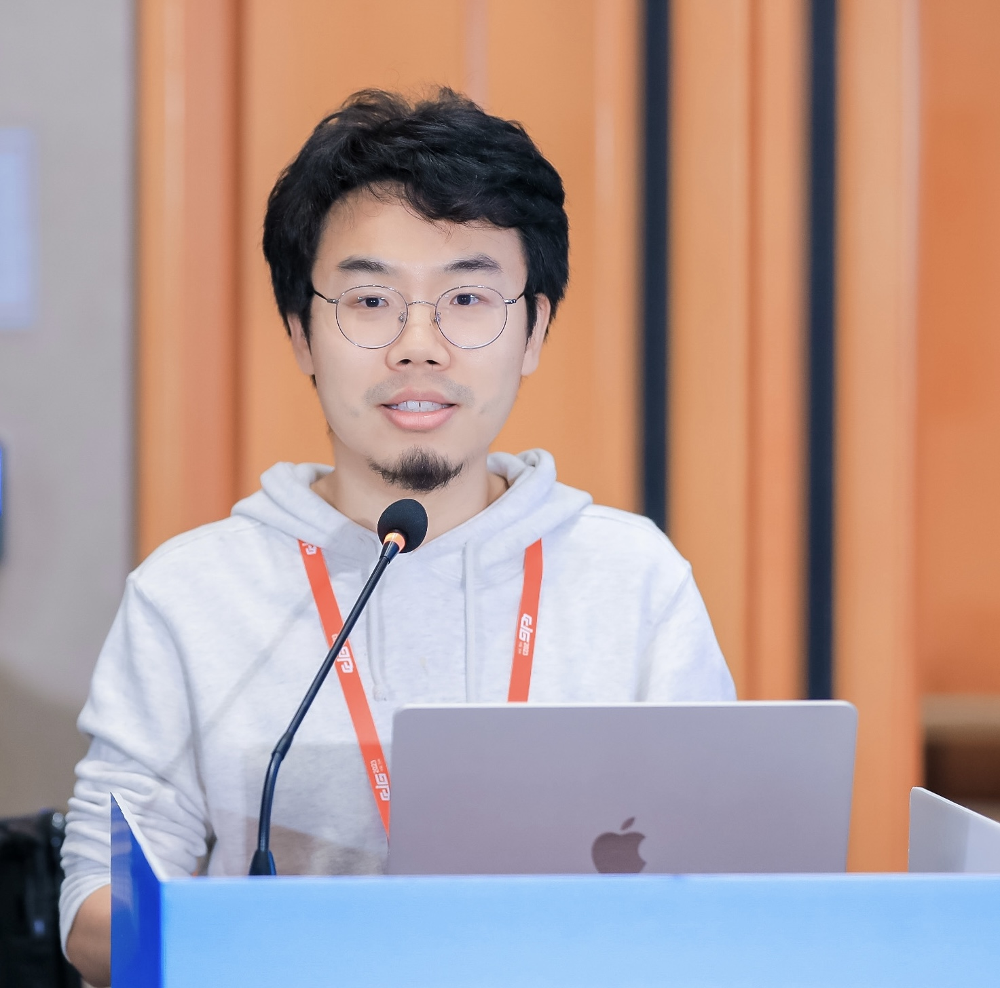

Yisen Wang is an Assistant Professor at Peking University. His research broadly focuses on representation learning, particularly on extracting robust and meaningful representations from unlabeled, noisy, and adversarial data. He has published over 50 papers at top-tier venues such as ICML, NeurIPS, and ICLR, receiving four Best Paper Awards or Runner-ups and achieving over 12,000 citations on Google Scholar. He serves as Senior Area Chair for NeurIPS 2024 and 2025.
Short Abstract: Self-supervised learning (SSL) has become the cornerstone of modern foundation models, enabling them to learn powerful representations from vast amounts of unlabeled data. By designing auxiliary tasks on raw inputs, SSL removes the reliance on human-provided labels and underpins the pretraining–finetuning paradigm that has reshaped machine learning beyond the traditional empirical risk minimization framework. Despite its remarkable empirical success, its theoretical foundations remain relatively underexplored. This gap raises fundamental questions about when and why SSL works, and what governs its generalization and robustness. In this talk, I will introduce representative SSL methodologies widely used in foundation models, and then present a series of our recent works on the theoretical understanding of SSL, with a particular focus on contrastive learning, masked autoencoders and autoregressive learning.